Ejercicio 1
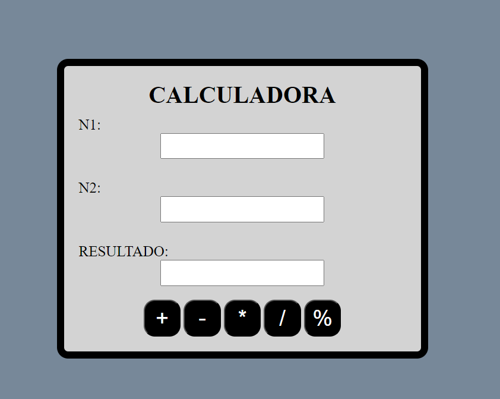Descripción del Ejercicio 1: Un ejercicio de calculadora básica enseña a crear una app simple que realiza operaciones matemáticas (suma, resta, etc.), con botones y una pantalla para mostrar resultados, ayudando a aprender conceptos de programación básica.
Ejercicio 2
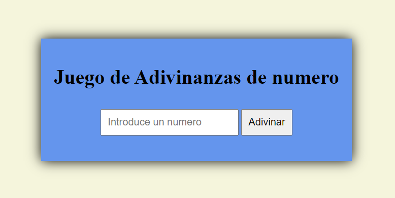Descripción del Ejercicio 2: Un ejercicio de adivinar números consiste en crear un juego donde el programa elige un número al azar y el jugador intenta adivinarlo, recibiendo pistas como "más alto" o "más bajo", enseñando lógica condicional y bucles.
Ejercicio 3
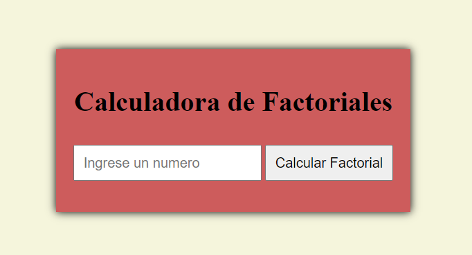Descripción del Ejercicio 3: Un ejercicio de calculadora de factoriales nos permite crear una aplicación que calcula el factorial de un número ingresado, reforzando conceptos de recursividad o bucles en programación.
Ejercicio 4
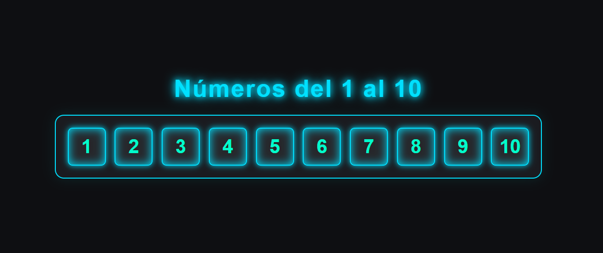Descripción del Ejercicio 4: Un ejercicio para imprimir números del 1 al 10 usando do-while consiste en implementar un bucle que ejecute el código al menos una vez y continúe hasta que el contador alcance 10, enseñando control de flujo en programación.
Ejercicio 5
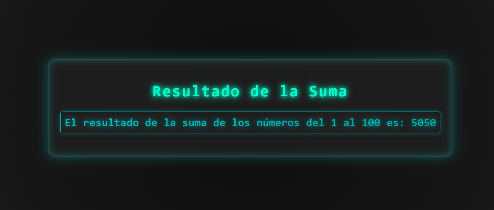Descripción del Ejercicio 5: Un ejercicio para sumar los números del 1 al 100 con do-while implica usar un bucle que acumula la suma mientras incrementa un contador, hasta que alcanza 100, reforzando conceptos de iteración y acumulación en programación.
Ejercicio 6
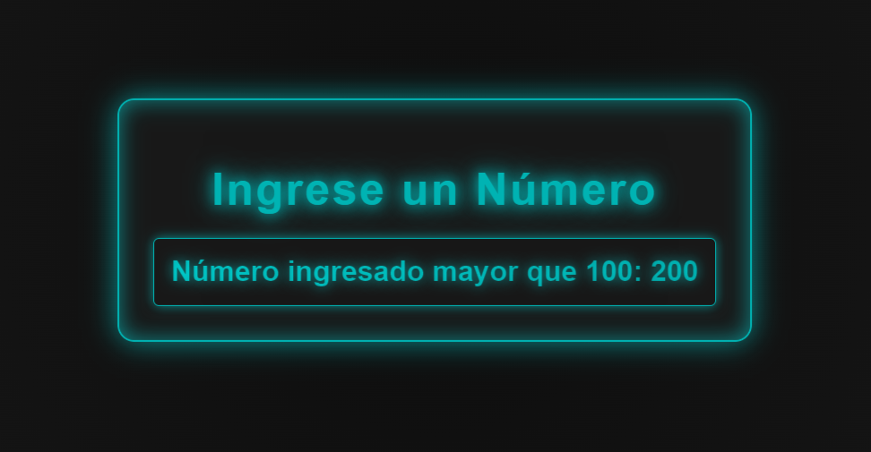Descripción del Ejercicio 6: Este ejercicio utiliza la funcion de do-while para imprimir un numero mayor que el que ya esta asignado en la pagina.
Ejercicio 7
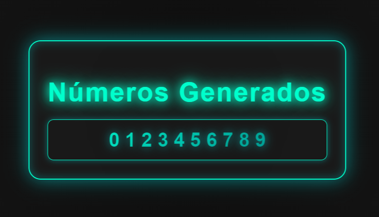Descripción del Ejercicio 7: Un ejercicio para imprimir números usando for implica utilizar este bucle para mostrar en pantalla una secuencia numérica, enseñando el uso de estructuras iterativas y la sintaxis del bucle for en programación.
Ejercicio 8
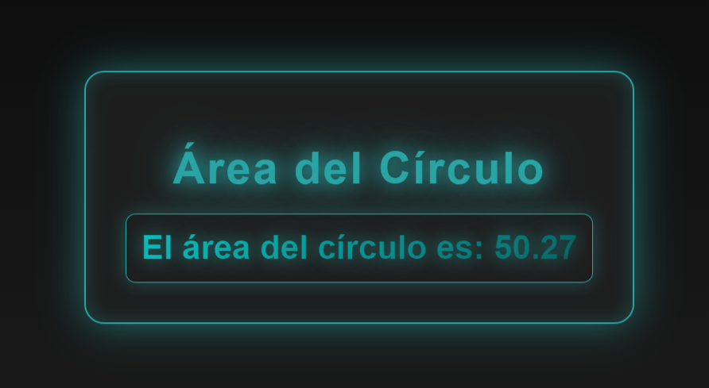Descripción del Ejercicio 8: Un ejercicio para calcular el área de un círculo en JavaScript con un radio fijo implica usar la fórmula A = πr² y mostrar el resultado, reforzando conceptos de variables y operaciones matemáticas.
Ejercicio 9
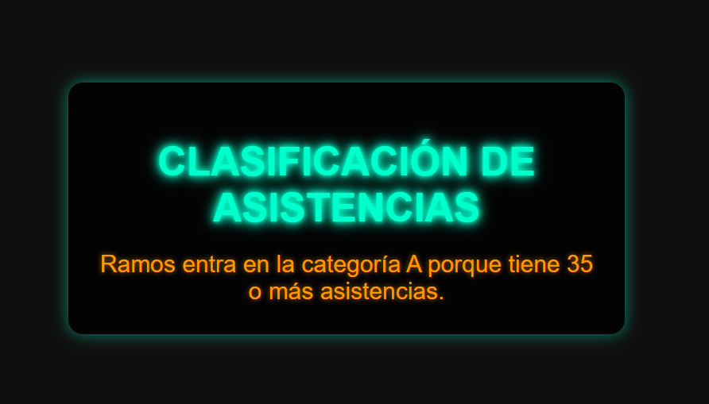Descripción del Ejercicio 9: Este ejercicio clasifica a los estudiantes en categorías basadas en su número de asistencias:
1.Categoría A: Más de 35 asistencias.
2.Categoría B: Entre 21 y 34 asistencias.
3.Categoría C: Menos de 21 asistencias.
El código solicita el nombre y las asistencias del usuario, y luego utiliza condiciones if-else para determinar y mostrar la categoría correspondiente.
Ejercicio 10
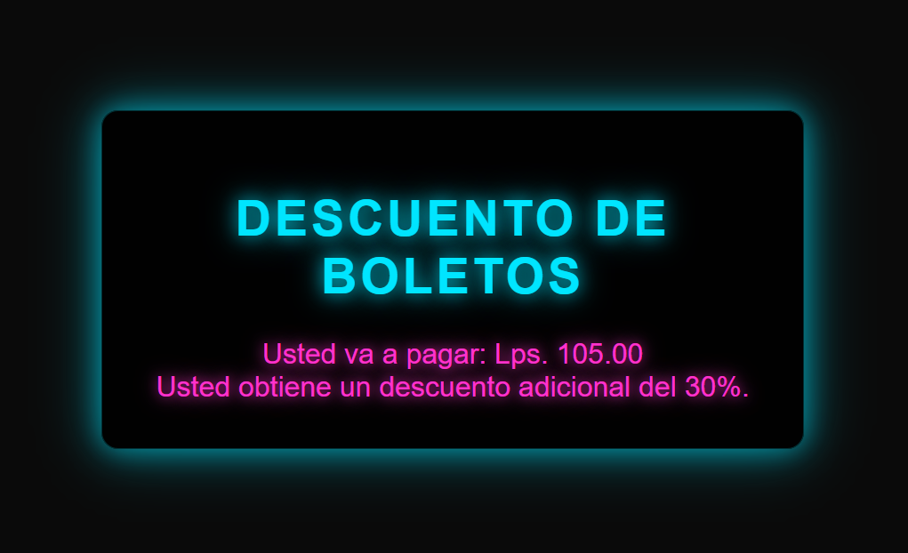Descripción del Ejercicio 10: Este ejercicio calcula el precio del boleto con descuentos basados en la edad y si el usuario es estudiante:
Menores de 12 años: 40% de descuento.
Entre 13 y 21 años: 30% de descuento, con un chequeo adicional para estudiantes.
Mayores de 60 años: 60% de descuento.
Edad no calificada: Precio completo.
Ejercicio 11
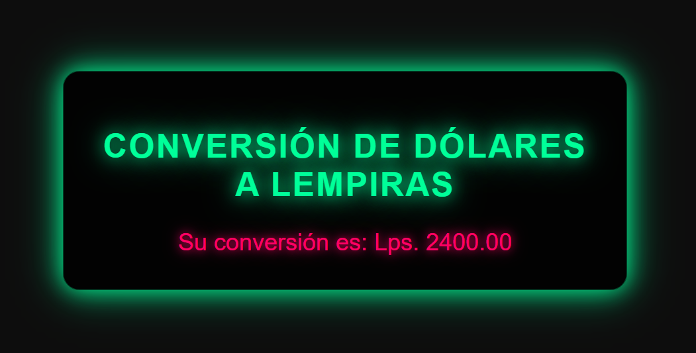Descripción del Ejercicio 11: Un ejercicio para convertir dólares a lempiras implica tomar una cantidad en dólares, multiplicarla por un tipo de cambio predefinido, y mostrar el equivalente en lempiras, enseñando el uso de variables y operaciones matemáticas en programación.
Ejercicio 12
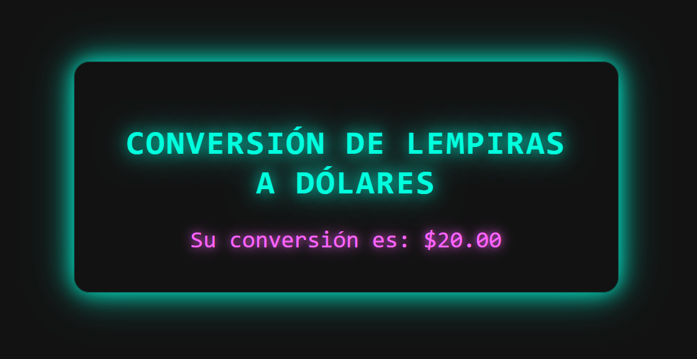Descripción del Ejercicio 12: Un ejercicio para convertir lempiras a dólares consiste en ingresar una cantidad en lempiras, dividirla por el tipo de cambio actual, y mostrar el resultado en dólares, reforzando el uso de variables y operaciones matemáticas en programación.
Ejercicio 13
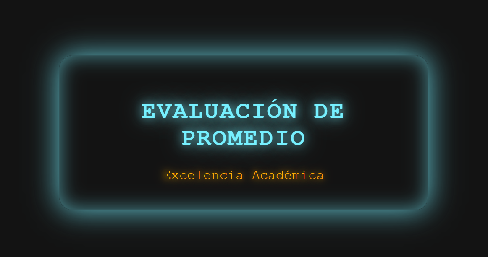Descripción del Ejercicio 13: Este ejercicio clasifica el rendimiento académico de un estudiante según su promedio:
75 o menos: "Necesita Mejorar".
76 a 79: "Bueno".
80 a 90: "Muy Bueno".
91 a 100: "Excelencia Académica".
El código solicita el promedio del estudiante y utiliza una serie de condiciones if-else para mostrar el mensaje correspondiente según la categoría del promedio.
Ejercicio 14
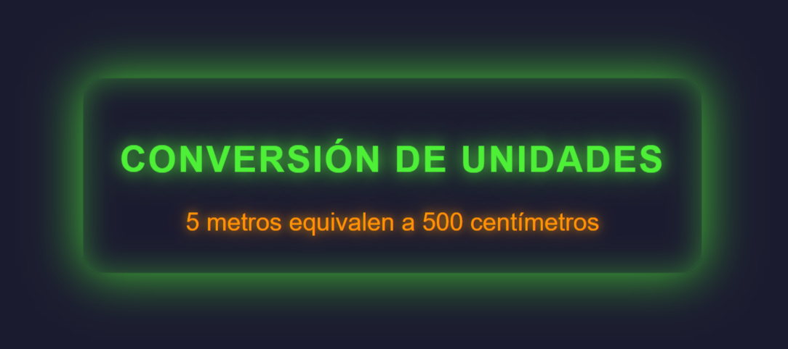Descripción del Ejercicio 14: Este ejercicio convierte entre metros y centímetros:
1. Si la unidad ingresada es "m" (metros), convierte a centímetros multiplicando por 100.
2. Si la unidad es "cm" (centímetros), convierte a metros dividiendo por 100.
3. Si se ingresa una unidad inválida, muestra un mensaje de error.
El código solicita la cantidad y la unidad a convertir, luego usa condiciones if-else para realizar la conversión correspondiente y mostrar el resultado.
Ejercicio 15
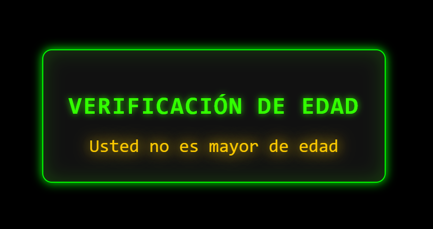Descripción del Ejercicio 15: Este ejercicio verifica si una persona es mayor de edad:
1. Si la edad ingresada es 18 o más, muestra "Usted es mayor de edad".
2. Si la edad es menor de 18, muestra "Usted no es mayor de edad".
El código solicita la edad y utiliza condiciones if-else para determinar si la persona es mayor o menor de edad.